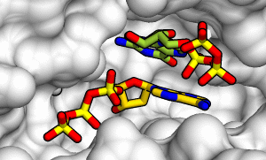
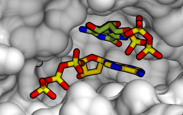
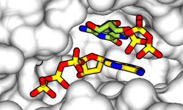
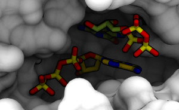

POVRayRenderLighting
About Light Source Settings¶
When performing rendering using the POV-Ray rendering dialog, depending on the scene, changing the light source settings may make it easier to see.
Light source settings can be configured with Lighting in the POV-Ray options tab (see figure below), but since the setting method varies depending on the rendering method (raytracing or radiosity), we'll explain them individually.

Types of Light Sources¶
POV-Ray files output by CueMol use the following two (or three in the case of radiosity) light sources for rendering:
- Spot light
- A shadow-casting light source illuminating from diagonally behind and to the right of the viewpoint. However, when Shadow (described below) is off, it renders without generating shadows (although light still hits objects).
- Flash light
- A non-shadow-casting light source illuminating from exactly the same position as the viewpoint. Since it faces the same direction as the line of sight, shadows cannot form in principle. In this sense, it's similar to flash lighting when taking photos with a camera.
- Ambient light
- Indirect lighting-type scattered light source that randomly illuminates from around the scene. Cannot be used with raytracing method.
Below are explanations of each dialog setting.
For Raytracing Method¶
- Shadow
- When turned on, shadows appear as if illuminated by a spotlight from diagonally behind and to the right of the viewpoint. (left: off, right: on)

- Use default settings
- Renders with default light source settings. This is usually sufficient, but if you want to make it brighter or darker, uncheck this and change the setting values described below.
- Spread
- Specifies the spread of the spot light that creates shadows. At 1, it becomes a perfect point light source with sharp shadows, but increasing it spreads the light source and makes shadows softer. At the maximum value of 10, shadow outlines become almost invisible. Setting Spread to 2 or higher makes shadow calculations complex, causing rendering to take longer. It's better to try 1 first and increase it when creating the final image if necessary. The figure below shows spread=3.
 - Intensity
- Specifies the overall light intensity. Higher values make it brighter.
- Flash fraction
- Specifies the proportion of Flash light within the above Intensity. Increasing this value creates a feeling like a photo taken with flash in darkness. (left: Flash fraction=1.0, right: Flash fraction=0.0)

{kind=link}
{kind=link}
{kind=link}
Incidentally, for raytracing method, it seems that appropriately bright images can be created without changing settings much from default, except for turning shadow on/off or setting spread to 1 or higher.
Particularly, if sharp shadows make it difficult to distinguish figure colors etc., it's good to increase spread to create softer shadows.
For Radiosity Method¶
- Shadow
- When turned on, shadows appear as if illuminated by a spotlight from diagonally behind and to the right of the viewpoint. Adding shadows creates more three-dimensional feeling, but tends to become too dark in compositions like the figure below (left: off, right: on)


- Use default settings
- Renders with default light source settings. This is usually sufficient, but if you want to make it brighter or darker, uncheck this and change the setting values described below.
- Spread
- Specifies the spread of the spot light that creates shadows. At 1, it becomes a perfect point light source with sharp shadows, but increasing it spreads the light source and makes shadows softer. At the maximum value of 10, shadow outlines become almost invisible. Setting Spread to 2 or higher makes shadow calculations complex, causing rendering to take longer. It's better to try 1 first and increase it when creating the final image if necessary. The figure below shows spread=3.

- Intensity
- Specifies the overall light intensity. Higher values make it brighter.
- Flash fraction
- Specifies the proportion of Flash light within the above Intensity. Increasing this value creates a feeling like a photo taken with flash in darkness. (left: Flash fraction=1.0, right: Flash fraction=0.5)


As can be seen from the above figures, increasing Flash fraction makes the ambient light effect less noticeable, ultimately resulting in images without depth perception that aren't much different from images created with raytracing method. - Ambient fraction
- Specifies the proportion of ambient light intensity. Specifically, it specifies what fraction of the light intensity other than the above Flash light (=Intensity(1-Flash fraction)) should be ambient light (specifically, Ambient light intensity = Intensity(1-Flash fraction)*Ambient fraction). Reducing Ambient fraction too much defeats the purpose of using radiosity method, so it's better not to reduce it too much.
(left: Ambient fraction=1.0, right: Ambient fraction=0)

{kind=link}
Efficient Setting Method¶
For radiosity method, default settings are often sufficient for scenes where light easily reaches everywhere, such as ribbon models. For figures inside cavities of surface models like the samples on this page, the overall scene tends to become too dark, so it might be better to increase Flash fraction or Intensity from default values. However, since rendering takes time, starting trial and error immediately with final quality will take a very long time. For example, following this approach allows efficient condition testing:
- Set Radiosity to Fast or OutdoorLQ mode. See cuemol2/Radiosity. Make image size smaller and try rendering.
- If too dark, increase overall Intensity. However, be careful not to increase too much, as it will result in images where bright parts are blown out like overexposed photos.
- Alternatively, increase Flash fraction. However, be careful not to increase too much, as it will result in images without depth perception like photos with too much flash.
- Also check if shadows are too sharp.
- When brightness becomes satisfactory, change Radiosity mode to OutdoorHQ etc. and render at final image size. If shadows were too sharp above, increase spread=3 etc. here.
- If still too dark (or too bright) even after the above, it's faster to perform gamma correction or contrast adjustment in Photoshop or GIMP.